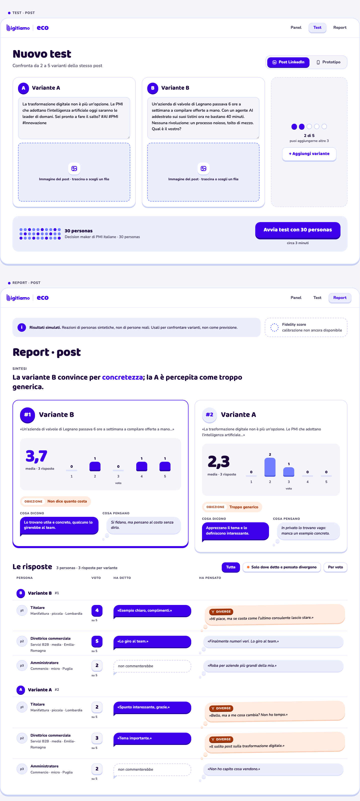
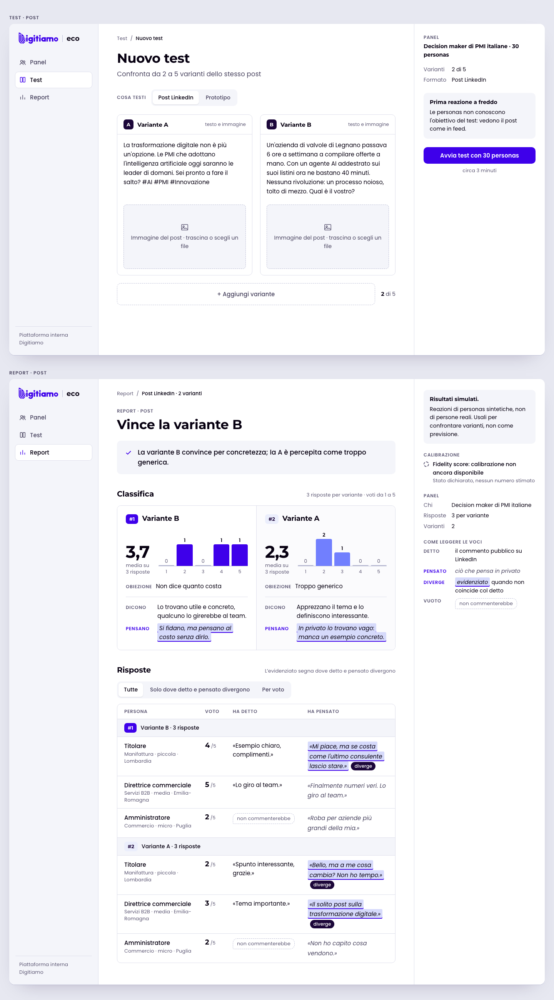
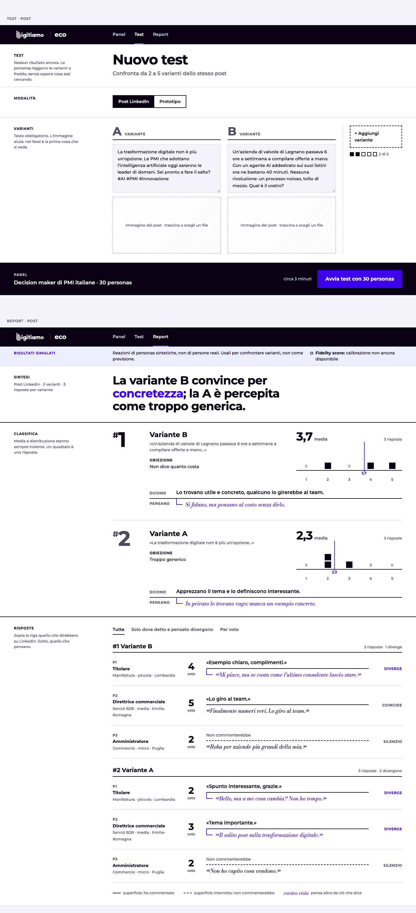

Candy
- Detto/pensato
- Fumetto viola per il detto, nuvoletta per il pensato, arancio quando divergono.
- Per chi
- Chi vuole uno strumento amichevole e riconoscibile.
- Rischio
- Troppo giocoso per un report da mostrare fuori.

Stessi contenuti e dati di prova, cambia solo la grafica. Le schermate sono Test post e Report post. Apri una tavola per vederla a dimensione reale.


